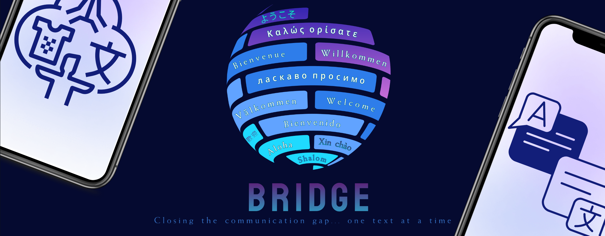

Bridge : Translation Mobile App
"Closing the communication gap, one text at a time."
"Closing the communication gap, one text at a time."
Our team conducted 5 1:1 interviews and surveyed 34 individuals. Top findings include: 84.4% of adults interact with someone of a different language, 75% prefer to communicate over text/
There is a need for a language translator that operates in real-time, delivers fewer errors, and offers more language choices than many other programs used today. We also see the need to understand a country's customs and culture. Fewer errors in translation, along with a better understanding of an area's culture means less worry of offending anyone or accidentally asking for the wrong information.
We started putting pen to paper to get a good grasp of how we wanted the mobile app to flow.


During our mid-fidelity user testing, we found that our app homwpage was difficult to read, and information in "etiquette" and "culture" could be combined into one page.
In the last round of high-fidelity user testing and feedbach phase, there were comments on the combination of color and graphics. Some parts of our mobile app could be out of ADA compliances. Most testers felt that the homepage could go through more iterations tgo make it feel more like a home screen.